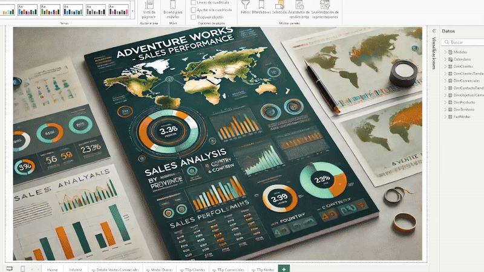
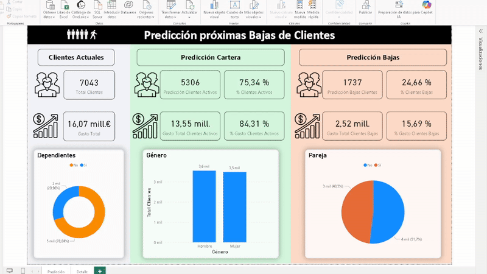
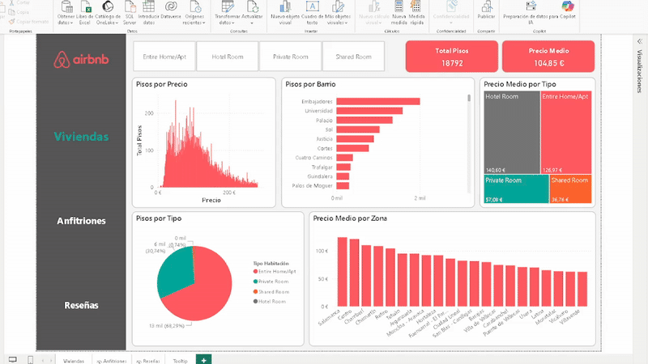
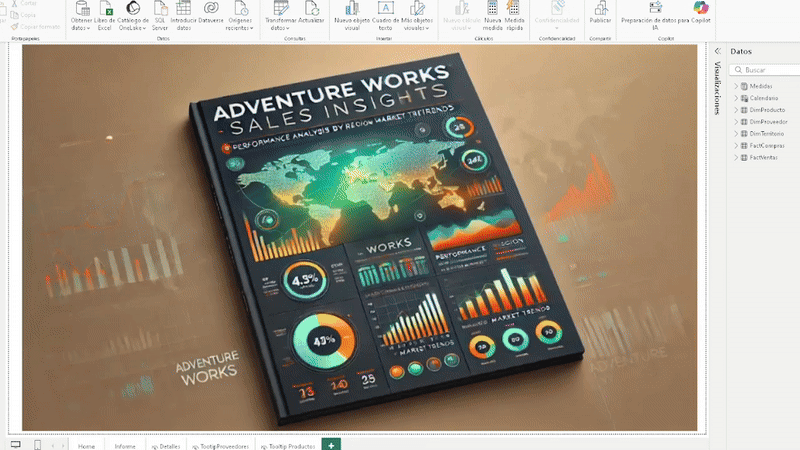
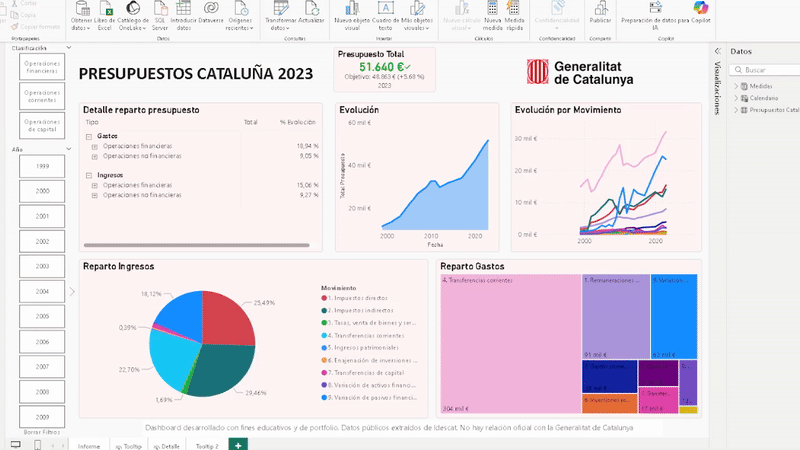
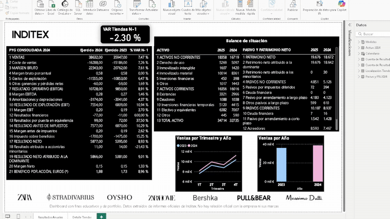
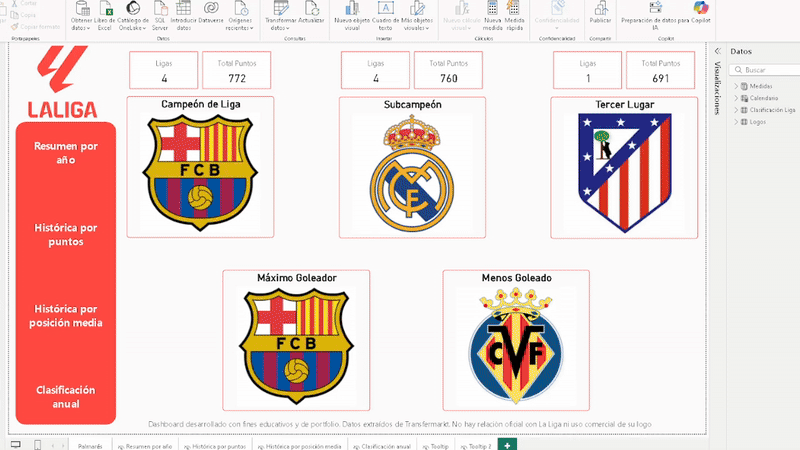

Daniel Álvarez Míguez – Power BI | SQL | Python
Soy profesional en Finanzas y Control de Gestión con experiencia en análisis contable, reporting y optimización de márgenes, complementado con formación avanzada en Data Analytics & Big Data.
He trabajado en Decathlon y Leroy Merlin, liderando equipos, gestionando KPIs y desarrollando dashboards para apoyar la toma de decisiones estratégicas. Domino SQL, Python y Power BI, y me apasiona transformar datos complejos en información clara y útil para el negocio.
Actualmente busco aportar valor como Controller Financiero o Analista de Datos, combinando visión financiera y analítica para mejorar eficiencia y resultados.
Objetivo: Analizar las ventas para identificar productos clave, canales de mayor rendimiento y optimizar la estrategia comercial.
Demo interactiva

Ver proyectoObjetivo: Evaluar la probabilidad de abandono de clientes y segmentarlos para aplicar estrategias de retención efectivas.
Demo interactiva

Ver proyectoObjetivo: Analizar el mercado de alquiler de Airbnb en Madrid para comprender la distribución de tipos de vivienda, precios y regulación de licencias.
Demo interactiva

Ver proyectoObjetivo: Identificar proveedores estratégicos y oportunidades de optimización de compras para reducir costos y concentrar esfuerzos en proveedores clave.
Demo interactiva

Ver proyectoObjetivo: Analizar la evolución de los presupuestos de la Generalitat, identificando tendencias y áreas de gasto prioritarias a lo largo del tiempo.
Demo interactiva

Ver proyectoObjetivo: Evaluar el desempeño financiero y operativo de Inditex, incluyendo ventas, apertura/cierre de tiendas y cuenta de resultados, para apoyar decisiones estratégicas.
Demo interactiva

Ver proyectoObjetivo: Analizar el rendimiento histórico de los equipos de LaLiga para identificar tendencias, diferencias de ranking y equipos destacados en distintas métricas.
Demo interactiva

Ver proyectoEmail: dalvarezmiguez@gmail.com
LinkedIn: Perfil LinkedIn
GitHub: Repositorio GitHub